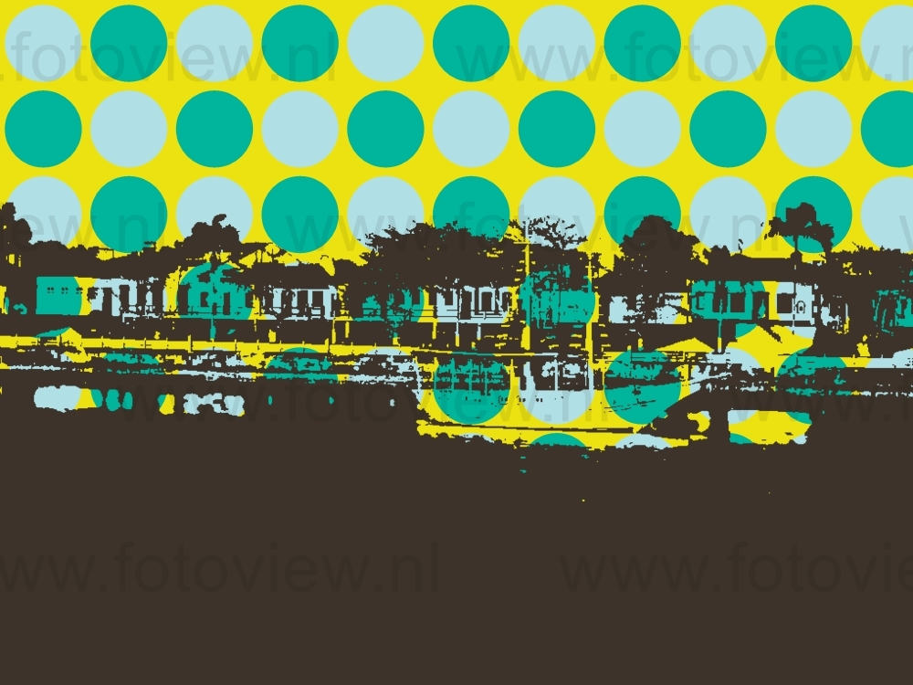
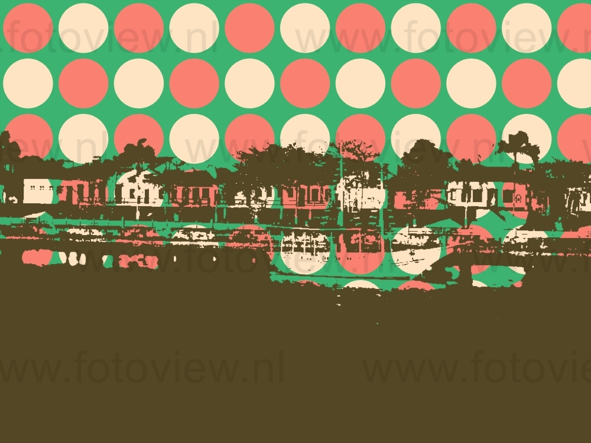
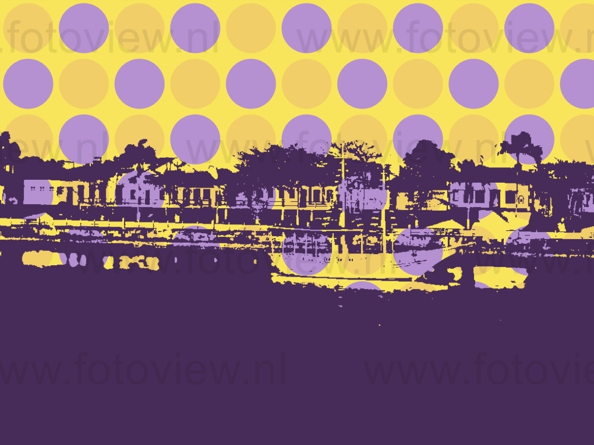

Cananéia[nota 1] é um município brasileiro do litoral de São Paulo. É uma das treze cidades da Região Imediata de Registro, que por sua vez é uma das seis regiões imediatas que compõem a Região Intermediária de Sorocaba. Cananéia localiza-se a sudoeste da capital do estado, distando desta, cerca de 265 km.[2] É o município mais meridional do estado de São Paulo.[5] Sua população em 2021 foi estimada pelo IBGE em 12 542 habitantes, ocupando uma área de 1 237,3 km².[1] sendo o 345º município mais populoso do estado. É formado pela sede e pelo distrito de Ariri.[6][7] Cananéia é considerada por alguns historiadores portugueses e espanhóis a cidade mais antiga do Brasil,[8][9][10] cinco meses antes da fundação de São Vicente, mas por falta de documentação oficial que comprove tal fato, São Vicente é oficialmente a cidade mais antiga do Brasil. O centro histórico de Cananéia ainda preserva os estilos arquitetônicos adotados pelas primeiras casas desde o período colonial até o final do século XIX. As praias também atraem milhares de pessoas na alta temporada, sendo que na Ilha do Cardoso há várias trilhas e cachoeiras, além de vários sítios arqueológicos. As festas, a culinária e o artesanato também são atrativos à parte da cidade, cujas principais fontes de rendas são a pesca e o turismo.
  